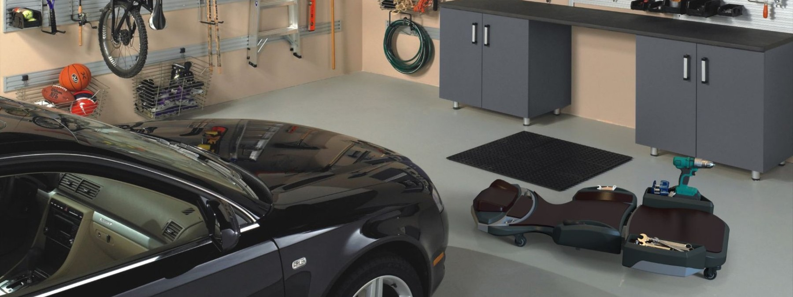
The mechanic's creeper was originally only designed for short use. Mechanics were leaving constantly to retrieve and look for tools — losing at least 45 minutes a day, standing up and crouching back down for things that should have been within arm's reach.
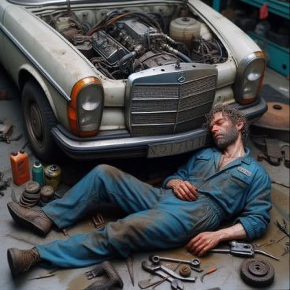
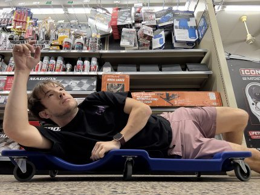
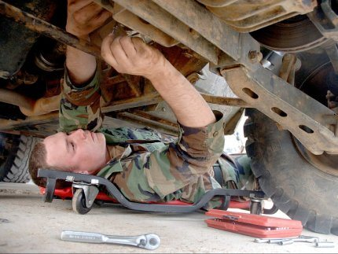
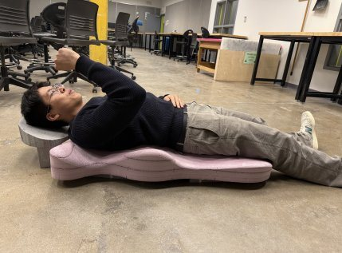
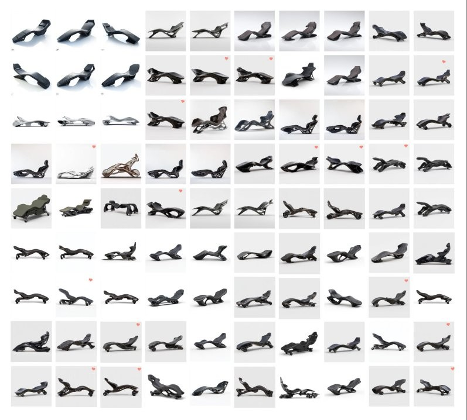
CNC foam. Hand carved foam. CNC MDF. The making method changed with the question being asked.
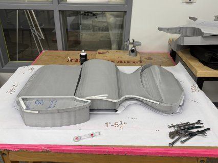
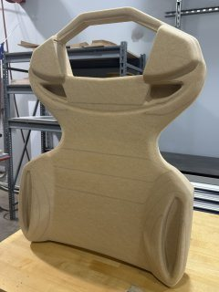
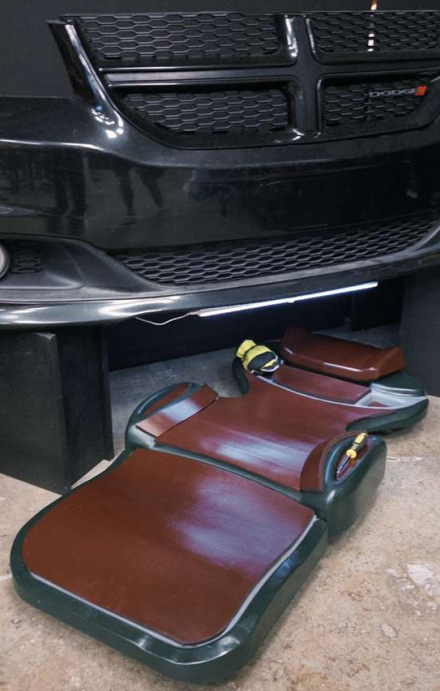
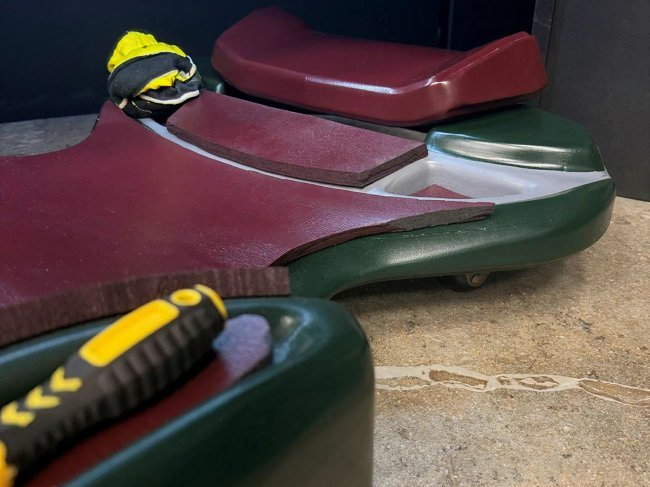
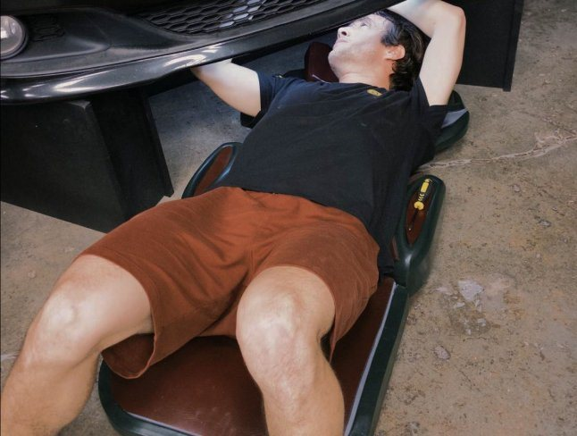
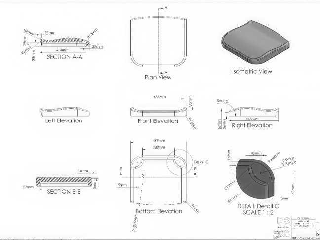
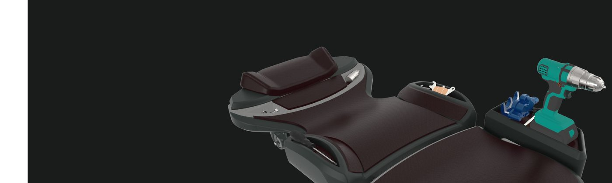
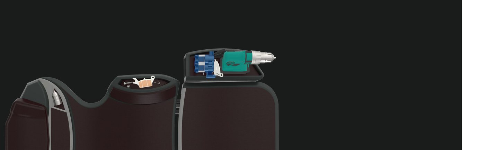
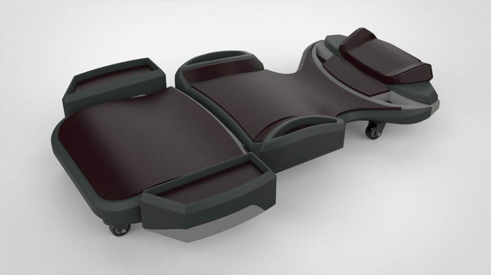
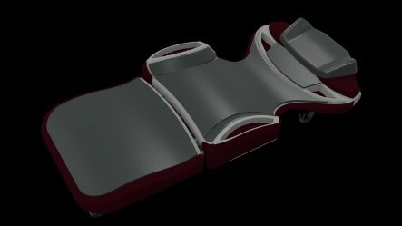
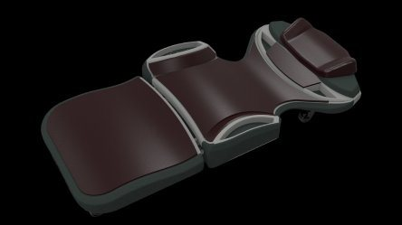
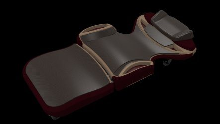
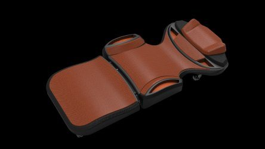
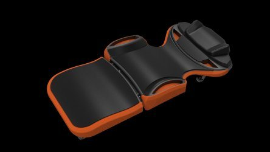
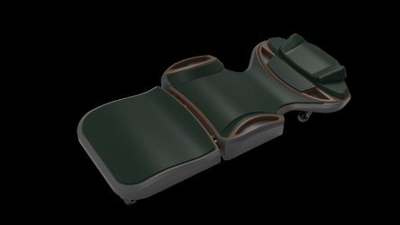
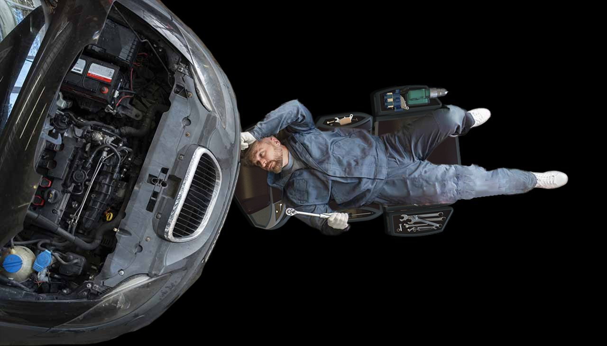